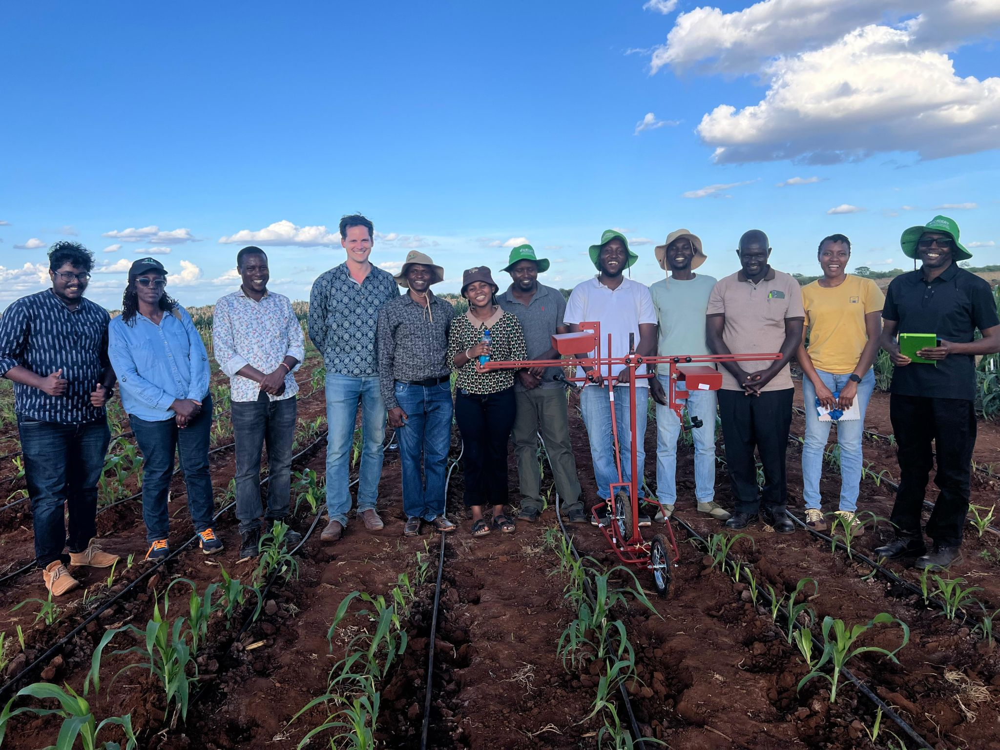

Capturing farmer voice, images, and rankings at scale to improve real-world crop evaluation.
Context
Sikia was developed within the Alliance of Bioversity International and CIAT to modernize participatory on-farm trials by integrating AI into the widely used TRICOT methodology and ClimMob platform.

Problem
Crop breeding programs lack scalable ways to capture rich farmer feedback and real-world performance data.
- Farmer insights are mostly lost or reduced to simple rankings
- Voice and observational data are difficult to collect at scale
- Existing tools (e.g. form-based systems) are fragmented and not AI-enabled
- Donors increasingly question whether current systems can keep pace with modern AI capabilities
Result: critical data gaps in evaluating crop varieties under real on-farm conditions.
Solution
Sikia is an offline-first mobile and web platform that integrates:
- 📊 Structured ranking data (TRICOT methodology)
- 🎤 Voice-based farmer feedback (speech-to-text)
- 📷 Image capture (computer vision for trait extraction)
All combined into a unified, AI-enabled workflow that transforms multimodal field data into structured insights for breeders.
My role
Project Lead – Sikia
- Defined product vision, strategy, and roadmap under tight donor timelines
- Hired and led a focused engineering team (mobile + backend)
- Aligned stakeholders across research, AI (NDIZI), and legacy systems (ClimMob)
- Translated complex research workflows into scalable digital product architecture
- Led MVP delivery planning across rapid prototyping phases
Approach
Delivered an end-to-end MVP (April 2026) with:
- Offline-first mobile data collection (critical for rural environments)
- Multilingual voice capture (English + Swahili)
- Image-based trait data capture with AI integration
- Middleware layer connecting ClimMob with AI pipelines
- Unified backend for data ingestion, validation, and analytics
Impact (early / expected)
- Enables farmer voice to be captured at scale, not just rankings
- Bridges the gap between participatory research and AI-driven analysis
- Positions the platform as a next-generation upgrade to ClimMob
- Responds directly to donor pressure to modernize digital infrastructure
- Creates a foundation for scaling across CGIAR and national programs
Why it matters
Sikia advances inclusive, data-driven agricultural innovation by:
- Making farmer knowledge measurable and actionable
- Enabling evidence-based crop improvement under real conditions
- Supporting development of climate-resilient varieties
- Bridging digital divides through offline-first, accessible technology
Key challenges
- Low-resource environments (connectivity, devices, logistics)
- Limited availability of high-quality AI models for African languages
- Integration with legacy systems (ClimMob) without disrupting workflows
- Aligning multiple stakeholders (researchers, donors, engineers) under time pressure
Key insight
Farmer-generated voice and image data, when combined with structured rankings, can significantly improve how crop performance is evaluated — but only if captured in a simple, scalable, and AI-enabled way.